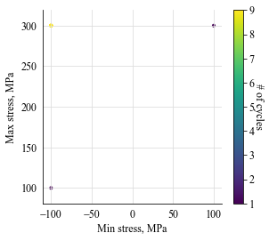
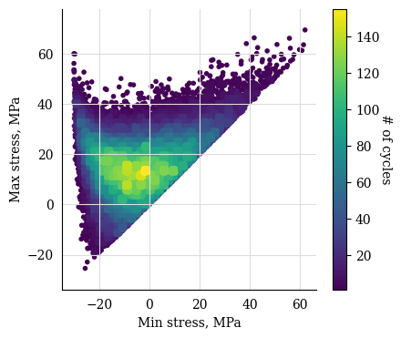

3. Count stress cycles¶
The CycleCount class incorporates the main information about a processed signal for fatigue analysis.
a. Constant fatigue load¶
Note
In this example we define a fatigue stress signal in the form of a sinusoidal function.
We then feed our signal to the CycleCount class.
Define the time and stress arrays
import matplotlib.pyplot as plt
import numpy as np
from py_fatigue import CycleCount
t = np.arange(0, 10.1, 0.1) # (in seconds)
s = 200 * np.sin(np.pi*t) + 100 # (in MPa)
plt.plot(t, s)
plt.xlabel("time, s")
plt.ylabel("stress, MPa")
plt.show()

Define the CycleCount instance
cc = CycleCount.from_timeseries(s, t, name="Example")
cc.summary()
| Example | |
|---|---|
| Cycle counting object | |
| largest full stress range, MPa | None |
| largest stress range, MPa | 400.0 |
| number of full cycles | 0 |
| number of residuals | 11 |
| number of small cycles | 0 |
| stress concentration factor | N/A |
| residuals resolved | False |
| mean stress-corrected | No |
- CycleCount from constant time series
fig, ax = cc.plot_histogram()

Showing the exported dictionary
cc.as_dict(legacy_export=True)
Gives:
{
'nr_small_cycles': 0,
'range_bin_lower_bound': 0.2,
'range_bin_width': 0.05,
'hist': [],
'lg_c': [],
'res': [200.0, 400.0, 400.0, 400.0, 400.0, 400.0,
400.0, 400.0, 400.0, 400.0, 200.0],
'res_sig': [100.0, 300.0, -100.0, 300.0, -100.0, 300.0,
-100.0, 300.0, -100.0, 300.0, -100.0, 100.0]
}
b. Weibull-distributed signal¶
Note
Generate a Weibull-distributed stress history and count its cycles.
Define the time and stress arrays
import py_fatigue.testing as test
# Simulate a random signal
t = test.get_sampled_time(duration=10000, fs=10)
s = test.get_random_data(
t=t, min_=-30, range_=180, random_type="weibull", a=2., seed=42
)
# Plot the signal
plt.plot(t, s, 'k', lw=0.5)
plt.xlabel("Time, s")
plt.ylabel("Signal, MPa")
plt.show()

Define the CycleCount instance
# CycleCount definition
cycle_count = CycleCount.from_timeseries(
time=t, data=s, mean_bin_width=3., range_bin_width=3.,
name="Random signal",
)
cycle_count.summary()
| Cycle counting object | Random signal |
|---|---|
| largest full stress range, MPa | 179.026964 |
| largest stress range, MPa | 180.0 |
| number of full cycles | 33317 |
| number of residuals | 23 |
| number of small cycles | 0 |
| stress concentration factor | N/A |
| residuals resolved | False |
| mean stress-corrected | No |
fig, ax = cycle_count.plot_histogram()

Exporting the rainflow counted signal as a json dictionary, both in legacy (no mean stress) and new format.
# Exporting the cycle-count matrix in the legacy format, i.e. not
# accounting for mean stresses. This function has been kept for
# backwards compatibility.
exp_dict_legacy = cycle_count.as_dict(
max_consecutive_zeros=20, damage_tolerance_for_binning=0.2, legacy_export=True
)
print(exp_dict_legacy)
{"nr_small_cycles": 99, "range_bin_lower_bound": 0.2, "range_bin_width": 3.0,
"hist": [1346.0, 1485.0, 1433.0, 1397.0, 1455.0, 1493.0, 1479.0, 1471.0, 1348.0,
1432.0, 1361.0, 1234.0, 1236.0, 1203.0, 1146.0, 1103.0, 1072.0, 983.0,
957.0, 853.0, 808.0, 806.0, 679.0, 659.0, 570.0, 520.0, 449.0,
451.0, 397.0, 376.0, 289.0, 259.0, 236.0, 237.0, 164.0, 160.0,
120.0, 89.0, 85.0, 92.0, 60.0, 54.0, 39.0, 20.0, 24.0,
24.0, 17.0, 12.0, 10.0, 8.0, 2.0, 5.0, 6.0, 1.0,
0.0, 2.0, 0.0, 1.0, 0.0, 1.0], "lg_c": [],
"res": [ 64.9527, 76.1706, 83.8523, 112.9550, 115.8100, 123.7286, 125.4990,
137.6065, 138.7786, 139.5674, 140.8493, 159.0391, 159.1209, 167.0853,
167.1570, 180.0000, 179.8804, 122.3010, 115.1474, 58.9131, 53.7620,
31.8885],
"res_sig": [ 49.8674, -15.0853, 61.0853, -22.7670, 90.1880, -25.6220, 98.1066,
-27.3924, 110.2141, -28.5645, 111.0029, -29.8464, 129.1926, -29.9283,
137.157, -30.0000, 150.0000, -29.8804, 92.4207, -22.7267, 36.1864,
-17.5756, 14.3128, 14.2784]}
# Exporting the cycle-count matrix
exp_dict = cycle_count.as_dict(
max_consecutive_zeros=20, damage_tolerance_for_binning=1
)
print(exp_dict)
{"nr_small_cycles": 99, "range_bin_lower_bound": 0.2, "range_bin_width": 3.0,
"mean_bin_lower_bound": -25.5, "mean_bin_width": 3.0,
"hist": [[ 0.0, 1.0],
[ 1.0, 1.0],
[ 4.0, 5.0, 4.0, 1.0, 3.0],
[14.0, 17.0, 9.0, 10.0, 6.0, 4.0, 0.0, 2.0, 1.0],
[31.0, 31.0, 21.0, 20.0, 13.0, 10.0, 6.0, 7.0, 4.0, 5.0],
[33.0, 51.0, 24.0, 39.0, 31.0, 28.0, 22.0, 15.0, 13.0, 6.0, 2.0, 3.0,
1.0],
[56.0, 68.0, 63.0, 40.0, 45.0, 40.0, 36.0, 41.0, 19.0, 22.0, 18.0, 11.0,
7.0, 2.0, 1.0],
[74.0, 91.0, 78.0, 60.0, 78.0, 60.0, 75.0, 46.0, 44.0, 44.0, 40.0, 20.0,
19.0, 18.0, 4.0, 2.0],
...,
[ 0.0, 2.0, 0.0, 1.0, 0.0, 0.0, 0.0, 0.0, 1.0, 0.0, 0.0, 0.0,
1.0, 0.0, 0.0, 0.0, 1.0],
[ 0.0, 0.0, 0.0, 0.0, 0.0, 0.0, 1.0, 0.0, 0.0, 0.0, 0.0, 0.0,
0.0, 0.0, 0.0, 0.0, 1.0],
[0.0, 0.0, 0.0, 0.0, 1.0]],
"lg_c": [[ 52.7204, 157.4858], [ 52.7330, 165.3195], [ 53.0368, 165.7063],
[ 56.1889, 172.3578], [ 59.9228, 179.0270]],
"res": [[ 17.3910, 64.9527], [ 23.0000, 76.1706], [19.1591, 83.8523],
[ 33.7105, 112.9550], [ 32.2830, 115.8100], [36.2423, 123.7286],
[ 35.3571, 125.4990], [ 41.4109, 137.6065], [40.8248, 138.7786],
[ 41.2192, 139.5674], [ 40.5782, 140.8493], [49.6731, 159.0391],
[ 49.6322, 159.1209], [ 53.6143, 167.0853], [53.5785, 167.1570],
[ 60.0000, 180.0000], [ 60.0598, 179.8804], [31.2702, 122.3010],
[ 34.8470, 115.1474], [ 6.7298, 58.9131], [ 9.3054, 53.7620],
[ -1.6314, 31.8885]],
"res_sig": [ 49.8674, -15.0853, 61.0853, -22.7670, 90.1880, -25.6220, 98.1066,
-27.3924, 110.2141, -28.5645, 111.0029, -29.8464, 129.1926, -29.9283,
137.1570, -30.0000, 150.0000, -29.8804, 92.4207, -22.7267, 36.1864,
-17.5756, 14.3128, 14.2784]}
It is also possible defining the CycleCount instance from the exported CycleCount dictionary (json file).
# Reconstructing the CycleCount instance from the exported matrix
cycle_count_d = CycleCount.from_rainflow(exp_dict, name="Random Signal")
cycle_count_d.summary()
| Cycle counting object | Random Signal |
|---|---|
| largest full stress range, MPa | 179.027 |
| largest stress range, MPa | 180.0 |
| number of full cycles | 33219 |
| number of residuals | 22 |
| number of small cycles | 99 |
| stress concentration factor | N/A |
| residuals resolved | False |
| mean stress-corrected | No |
Compare the original and reconstructed mean–range histograms. The bottom panels show cumulative cycle counts for the signal and cycle counts per stress range for the reconstructed matrix.
fig, axs = plt.subplots(2,2, figsize=(13, 10))
cycle_count.plot_histogram(fig=fig, ax=axs[0, 0], plot_type="mean-range")
cycle_count_d.plot_histogram(fig=fig, ax=axs[0, 1], plot_type="mean-range")
cycle_count.plot_histogram(
fig=fig, ax=axs[1, 0], plot_type="counts-range-cumsum", s=30
)
cycle_count_d.plot_histogram(fig=fig, ax=axs[1, 1], plot_type="counts-range",
marker='s', s=20,
cmap=plt.get_cmap("gnuplot2")) # chg cmap
axs[1][1].set_xscale("log")
axs[1][0].set_xscale("log")
plt.show()

Import measured or generated stress histories¶
Use CycleCount.from_sep005() with records from an SDyPy reader. One
record with one-dimensional data returns a count. A list of records or
a record with multiple channel rows returns a flat list in input order.
The connector accepts stress in Pa, kPa, MPa, or GPa and returns MPa.
An omitted quantity means stress and an omitted unit means Pa.
from py_fatigue import CycleCount
record = {
"name": "Axial stress",
"data": [0, 20e6, 3e6, 40e6, 0],
"fs": 50,
"quantity": "s",
"unit_str": "Pa",
}
measured = CycleCount.from_sep005(record)
For a synthetic stress history, install pyExSi separately. Its sine
sweep returns a unitless waveform. Here the factor of 20 defines a
synthetic stress amplitude in MPa.
import numpy as np
import pyExSi
from py_fatigue import CycleCount
fs = 200
time = np.arange(fs * 20) / fs
stress = 20 * pyExSi.sine_sweep(time, freq_start=2, freq_stop=10)
generated = CycleCount.from_pyexsi(stress, fs=fs, unit="MPa")
SignalForge can also
generate nonstationary stress histories. If the generator's signal.x
samples already represent stress in MPa, use
CycleCount.from_timeseries(signal.x, unit="MPa"). Convert measured or
generated acceleration or force into stress using your own model before
cycle counting.
Supply either count directly to get_crack_growth(count, paris_curve,
geometry) for Paris crack growth with a curve in MPa √mm and dimensions
in mm. For ordered NASGRO propagation,
supply the tensile extrema and cycle counts as explicit LoadBlock
instances.